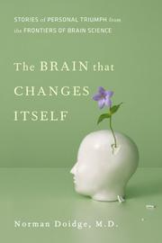

《重塑大脑，重塑人生》
书·Norman Doidge, 2007·The Brain That Changes Itself: Stories of Personal Triumph from the Frontiers of Brain Science

用故事讲神经可塑性，个别疗效被夸大，宜作为入门并保持怀疑。中译名未核实，此处中文题名为直译或沿用旧数据。
- 作者
- Norman Doidge
- 年份
- 2007
- 难度
- 入门
- 类型
- 实践
- 所属学派
- 赫布学习与神经可塑性
版本
- 中文版 《重塑大脑 重塑人生》 [美] 诺曼·道伊奇 · 洪兰 译 · 机械工业出版社 · 2015 豆瓣 8.2 分（1116 人评价） 豆瓣页面 ↗
- 英文版 The Brain That Changes Itself: Stories of Personal Triumph from the Frontiers of Brain Science Norman Doidge · Viking, first edition · 2007 Open Library ↗